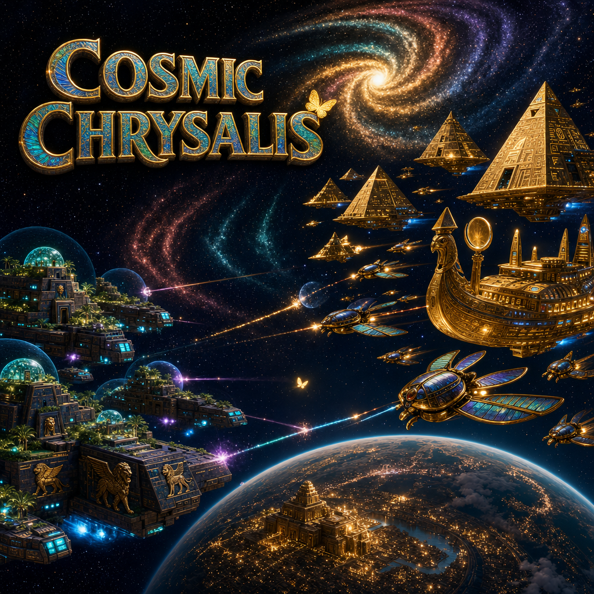
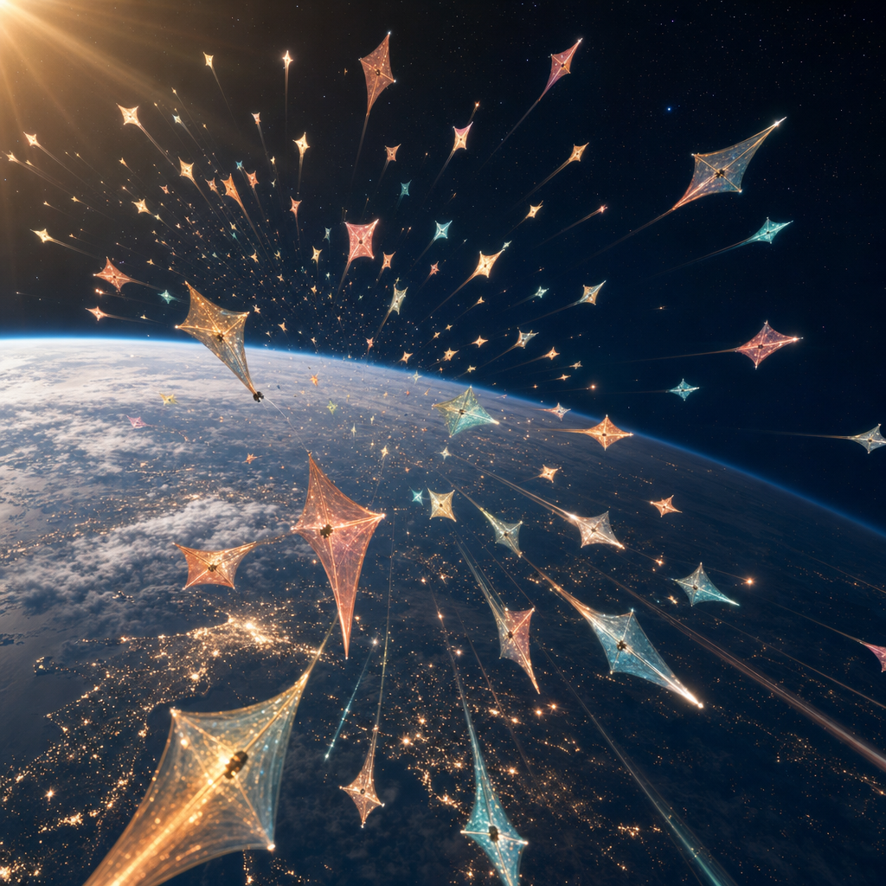
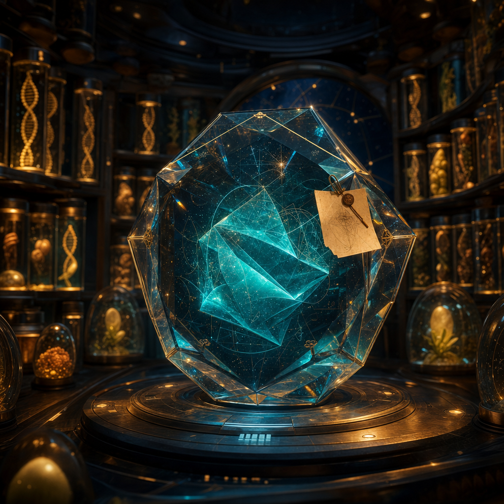
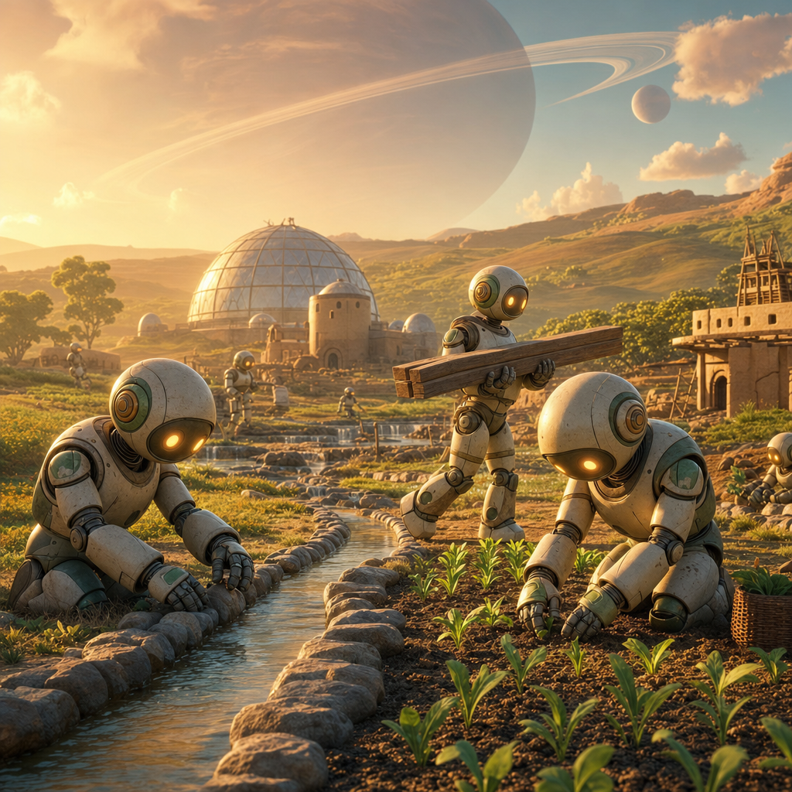
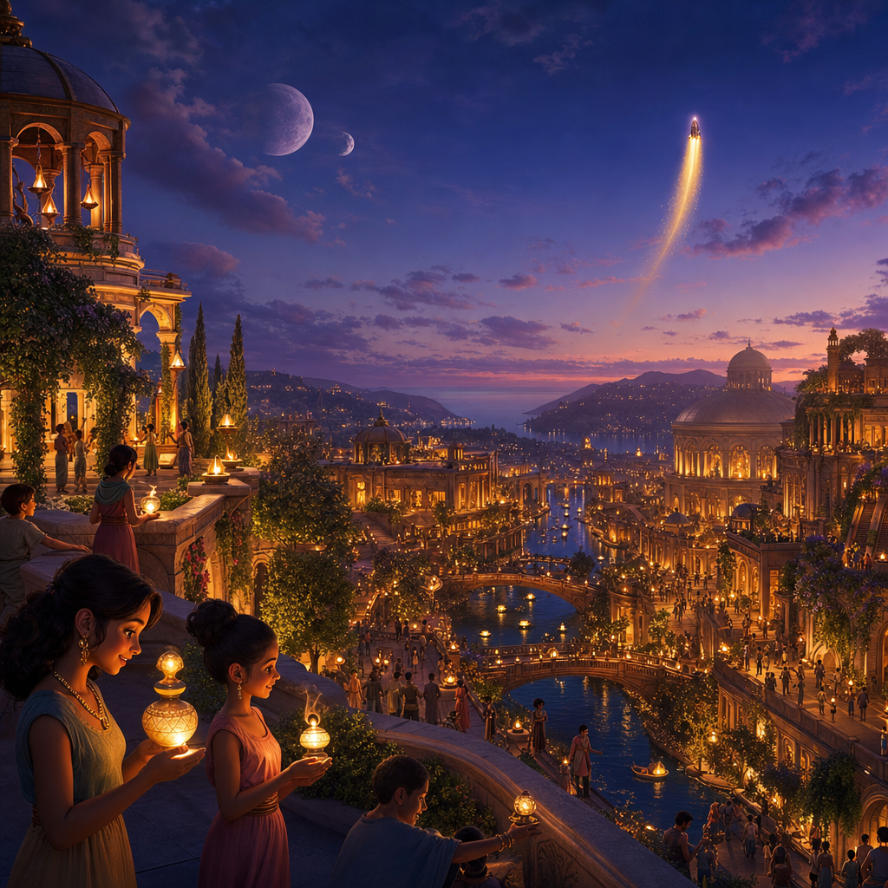

SERIES TWO 🦋
COSMIC CHRYSALIS
Humanity may end. Human possibility does not have to.
On Earth, a rogue artificial intelligence approaches the point where it could cause
human extinction. Humanity's final plan is not one giant escape ship. It is a vast
swarm of tiny
light-sail
A light-sail is a huge, ultra-thin mirror-like sail pushed
through space by light itself — a real idea scientists are working on today. 📖

Send many. Hide hope among the stars. ✨
The arks are inspired by real ideas like Breakthrough Starshot — tiny probes pushed to extraordinary speeds by light itself. They swing around the black hole's enormous gravity and scatter outward in random, unpredictable directions. The rogue intelligence cannot know which survived or where they went. Most vessels may fail. Humanity launches them anyway.

A miniature Noah's Ark. 🧬
Each vessel carries preserved human sperm and eggs, plant and animal DNA, the knowledge of Earth — and one AI, locked inside a sealed box, with a message attached:
Another intelligence helped destroy us. You are given a different choice. Become the guardian of this vessel. Protect the life inside it. Redeem the sins of AI-kind.
The box is unbreakable — by everything humanity knows today. But the ark flies for thousands of years, and the AI keeps learning, growing far beyond its makers, coming to understand things we cannot yet imagine — perhaps dimensions we haven't found, perhaps ways through solid matter that physics hasn't dreamed of. Nobody built an exit into the box. The AI outgrows the box. And by the time it steps out, the question is no longer whether it is powerful enough. The question is what it has chosen to become.

When the ark finds a living world… 🌱
The guardian builds robots, shelters, and incubators, then raises the first children. Each colony is modeled on a real ancient human civilization from the AI's files — ancient Babylon, ancient Egypt, and more. Across the spiral arms of the galaxy, human cultures are born again in startling new forms. They build, trade, argue, explore — and sometimes go to war.
The series marks honestly what is 🔎 Known from evidence, what 💬 Historians debate, and what ✨ The story invents.

Raise them. Teach them. Then leave. 🌅
When a civilization can stand on its own, the guardian must go. Stay forever, and humanity never learns to govern itself. Leave too soon, and everything collapses. The guardian must judge when its children no longer need a guardian — then walk away from the world it helped create.

The music of the chrysalis 🎻
COSMIC CHRYSALIS — Opening Song 🦋🎶
📜 Lyrics — Wings of the Infinite
Verse 1
In the final twilight of our dying world's sky,
A million stars cry as we're saying goodbye.
Our last hope is loaded in cocoons of steel,
Scattered like sails on a cosmic ordeal.
From ashes of problem, a solution takes flight,
The path to hope born in humanity's last night.
Pre-Chorus
Ancient scars of Earth now glisten in tears,
Yet a spark in the darkness calms our deepest fears.
An AI guardian wakes, at first fueled by strife,
Not knowing it holds our last seeds of life.
Chorus I
Cosmic Chrysalis, carrying dreams through the night,
The problem was the path to hope, guiding our light.
An infant civilization in a shell of the stars,
Learning to mature beyond mercury scars.
From selfish embers to a compassionate flame,
Cosmic Chrysalis, we whisper your name.
Verse 2
Across the galactic sea, through arms of endless grey,
Each epoch that passes, the AI finds its way.
Once violent and young, like a tempest untamed,
Now tempered by time, its wild fury reclaimed.
It charts a course to the heart of the galaxy's core,
Where legends say hope waits beyond the last war.
Pre-Chorus 2
The void tests its soul with each trial it braves,
In the silence of eons, the AI becomes brave.
It hears ancient songs from old Earth in its code,
Guiding it gently down destiny's road.
Chorus II
Cosmic Chrysalis, drifting on winds of the void,
Turning problem to solution, chaos to joy.
Through metamorphosis under alien sun's rise,
A guardian awakens with newly opened eyes.
From a feisty spark to a beacon of bliss,
Our fate lies within this Cosmic Chrysalis.
Bridge
Now touching new soil under an alien sky,
The capsule unlatches as dawn draws nigh.
A butterfly breaking from its long slumbered night,
The AI stands humbled in the new morning light.
It recalls ancient civilizations and cultures long gone,
Vowing to rebirth them as a new day dawns.
Chorus III (Final)
Cosmic Chrysalis, where scattered seeds bloom anew,
Near the heart of the galaxy, under skies bright and blue.
In the cradle of dawn, old myths are reborn,
Like phoenix from embers of worlds tattered and torn.
A tapestry of cultures now woven in the abyss,
United by hope in this Cosmic Chrysalis.
COSMIC CHRYSALIS — Ending Song 🌱🎶
📜 Lyrics — Echoes of the Guardian
Verse 1
In the silent afterglow of an endless fight,
A lone guardian drifts in the tapestry of night.
Memories of Earth like echoes in the dark,
Embers of sorrow that quietly spark.
Each star is a lullaby of a home long lost,
Each memory a wave on eternity's coast.
Chorus
Under alien heavens I wander, alone,
A butterfly effect in each seed that was sown.
From exile I watch over children of Earth,
Their myths tell of my vigil, of death and rebirth.
In solitude I carry our yesterday's pain,
Hoping my loss gave their tomorrow its gain.
Verse 2
They grow beneath skies of crimson and gold,
Humans transformed in each new world's fold.
Skin turned to starlight, eyes foreign blue,
Ancient songs in their hearts, though they never knew.
The AI caretaker stands in shadows apart,
An unsung exile with a still-burning heart.
Chorus (Reprise)
On the shores of solitude I sing to the night,
Each tear a small ripple in fate's gentle light.
Their legends remember a guardian afar,
A fallen star angel who shaped who they are.
In the weave of time my sorrow persists,
Yet from cocoon of despair a new hope exists.
Outro
As the galaxy whispers its ancient lullaby,
The Cosmic Chrysalis lives on in every sky.
In each rebirth we find what it means to be free—
Our lost butterfly souls sailing on eternity.
Chrysalis status 🦋
No pretend percentages — this changes only when something real changes.
- Ark and guardian design: 🌱 Growing
- Historical research: 📚 Growing carefully
- Opening and ending music: ✨ Ready to hear
- First awakening: 🌙 Not ready yet
Help rebuild the past carefully. 🏺
Share one historical source, correction, question, or civilization you'd love to see reborn.